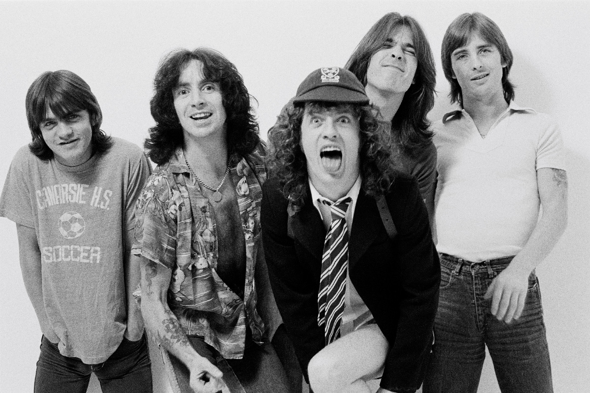
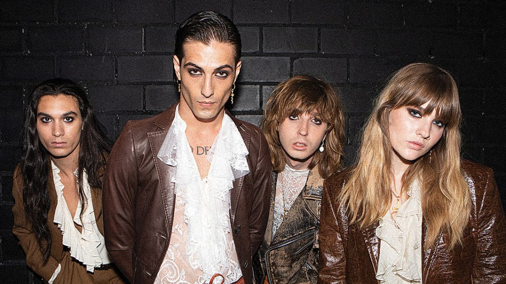

Top 15 melhores bandas de Rock ü§ò
- AC/DC 
- ARTIC MOKEYS
- FOO FIGHTERS
- GUNS N' ROSES
- KISS
- LINKIN PARK
- MANESKIN 
- NIRVANA
- PINK FLOYD
- OVERATS
- QUEEN
- RAGE AGAINST THE MACHINE
- SYSTEM OF DOWN
- THE LIVING END
- THE WHITE STRIPES
Com um suprimento ilimitado de riffs sujos, vocais estridentes e refrões intemporais e cativantes, o AC/DC é uma das forças mais importantes e duradouras do hard rock. Fundada no início dos anos 70 pelos irmãos escoceses Malcolm e Angus Young, a banda australiana explodiu no cenário internacional em 1979 com o lançamento de seu sexto álbum multi-platina, Highway to Hell. A morte do carismático vocalista Bon Scott em 1980 ameaçou descarrilar o grupo, mas o AC/DC seguiu em frente. Eles recrutaram o vocalista do Goerdie, Brian Johnson, e lançaram seu álbum de maior sucesso até o momento, Back in Black, que se tornou o segundo álbum mais vendido da história. A banda continuou a ajudar a definir o som do hard rock e do metal ao longo dos anos 80, 90 e além, gerando inúmeros imitadores e desfrutando de um sucesso comercial constante e consistente. Eles também se tornaram um dos melhores exemplos de rock de arena, tocando para grandes multidões com o passar dos anos e tocando mais forte do que nunca em álbuns de estúdio como The Razor's Edge, de 1990, e Power Up, de 2020, ambos os quais alcançaram o topo. camadas de vários gráficos.
Arctic Monkeys é uma banda britânica de rock formada em 2002 nos subúrbios da cidade de Sheffield, na Inglaterra. O grupo é formado por Alex Turner (vocal, guitarra), Matt Helders (bateria, backing vocal), Jamie Cook (guitarra) e Nick O'Malley (baixo, backing vocal). A banda é considerada uma das primeiras a ganhar atenção na internet, causando mudanças no cenário musical em como os grupos musicais pelo mundo promovem seu trabalho. Seu primeiro álbum, Whatever People Say I Am, That's What I'm Not foi lançado em 2006 e foi aclamado pela critica e se tronou o disco de estreia que vendeu mais rápido na história das paradas de sucesso britânicas e, em 2013, a revista Rolling Stone o nomeou como o 30º melhor álbum de todos os tempos. Em 2007, lançou o segundo álbum de estúdio Favourite Worst Nightmare , também aclamado pela critica e vencedor do prêmio de Melhor Álbum Britânico no Brit Awards de 2008. Em 2009, lançaram seu terceiro álbum, Humbug e em 2011 o quarto álbum, Suck It and See. Em 2013, alcançaram a popularidade mundial com o lançamento do álbum AM, que se tornou certificado de platina também nos Estados Unidos, emplacando hits como Do I Wanna Know? e R U Mine? e marcando o terceiro prêmio de Álbum do Ano no Brit Awards de 2014. Após turnês de grande sucesso mundial e um breve hiato, a banda lançou em 2018 o álbum com maior mudança sonora e criativa da carreira, o Tranquility Base Hotel & Casino. Em 2022, a banda lançou seu sétimo album, The Car. Ao todo, o grupo venceu sete prêmios Brit Awards — incluindo a categoria "Melhor Grupo Britânico" e três de "Melhor Álbum Britânico" — e foram também nomeados para três Grammy Awards. Eles ainda venceram um Mercury Prize em 2006 com seu disco de estreia. A banda já foi headliner de vários festivais pelo mundo, incluindo o de Glastonbury, em 2007 e 2013.
Foo Fighters é uma banda americana de rock formada em 1994, em Seattle, Washington. A banda foi fundada pelo ex-baterista do Nirvana, Dave Grohl, como um projeto de um homem só, após a dissolução do Nirvana, devido ao suicídio de Kurt Cobain. O projeto recebeu o nome de Foo Fighter, um apelido cunhado pelos pilotos de aviões estadunidenses para OVNIs e outros fenômenos aéreos. Ao longo de sua carreira o Foo Fighters ganhou 12 prêmios Grammy, sendo quatro vezes o de Melhor Álbum de Rock. Eles foram introduzidos no Rock and Roll Hall of Fame em 2021, seu primeiro ano de elegibilidade. Antes do lançamento do álbum de estreia, em 1995, Foo Fighters, que apresentava Dave Grohl como o único membro oficial, recrutou o baixista Nate Mendel e o baterista William Goldsmith, ambos ex-Sunny Day Real Estate, e também o guitarrista de turnê do Nirvana, Pat Smear. A banda começou com apresentações em Portland, Oregon. Goldsmith saiu durante a gravação do segundo álbum, The Color and the Shape (1997), por discordâncias a respeito da bateria, a maioria das partes dela foram regravadas por Grohl. Smear deixou a banda logo depois, mas apareceu com frequência como convidado a partir de 2005, voltando a ser um membro oficial em 2010. Smear e Goldsmith foram substituídos por Franz Stahl e Taylor Hawkins; Stahl foi demitido antes da gravação do terceiro álbum do grupo, There Is Nothing Left to Lose (1999). A banda continuou brevemente como um trio até que Chris Shiflett se juntou na guitarra após a conclusão de There Is Nothing Left to Lose. O Foo Fighters lançou seu quarto álbum, One by One, em 2002. Seguiu-se com o disco duplo In Your Honor (2005), que foi dividido entre músicas acústicas e outras com sonoridade mais pesada. O Foo Fighters lançou seu sexto álbum, Echoes, Silence, Patience & Grace, em 2007. No sétimo álbum de estúdio do Foo Fighters, Wasting Light (2011), produzido por Butch Vig, Pat Smear voltou a ser creditado como membro oficial. O oitavo álbum, Sonic Highways (2014), foi lançado como trilha sonora da minissérie de televisão dirigida por Grohl. Concrete and Gold (2017) foi o segundo álbum do Foo Fighters a alcançar o número um nos Estados Unidos e seu primeiro álbum de estúdio a apresentar o tecladista de longa data e turnê, Rami Jaffee, como membro oficial. Em 2021, a banda lançou seu décimo álbum, Medicine at Midnight. Em 25 de março de 2022, o baterista Taylor Hawkins foi encontrado morto em seu quarto de hotel, em Bogotá, Colômbia. A causa da morte não foi divulgada.

Guns N' Roses (por vezes abreviado como G N' R ou GnR) é uma banda norte-americana de hard rock formada em Los Angeles, Califórnia, em 1985. A banda lançou, até o momento, seis álbuns de estúdio, três EPs e um álbum ao vivo. A banda vendeu mais de 100 milhões de cópias em todo o mundo, sendo cerca de 43 milhões somente nos Estados Unidos. O seu álbum de estreia lançado em 1987, Appetite for Destruction, vendeu cerca de 33 milhões de cópias no mundo todo, sendo certificado 18 vezes platina pela RIAA (Associação da Indústria de Gravação da América), se tornando o álbum de estreia mais vendido da história da música. A formação atual inclui o vocalista e pianista Axl Rose, os guitarristas Slash e Richard Fortus, o baixista Duff McKagan, o baterista Frank Ferrer e os teclistas Dizzy Reed e Melissa Reese.
Kiss foi uma banda de hard rock dos Estados Unidos, formada em Nova Iorque em 1973 por Paul Stanley e Gene Simmons. Conhecida mundialmente por suas maquiagens, e por seus concertos que incluem guitarras esfumaçantes, cuspir fogo e sangue, pirotecnias e outros efeitos. Antes de chegarem à sua formação atual, a banda passou por algumas mudanças, sendo Stanley e Simmons os dois últimos integrantes da formação original da banda. O Kiss já recebeu 28 discos de ouro. Desde sua formação, a banda já vendeu mais de 25 milhões de álbuns nos Estados Unidos, e mais de 100 milhões de álbuns mundialmente. É dona de hits mundiais como Rock n Roll All Nite, Detroit Rock City e I Was Made For Lovin You. Constitui um dos maiores impactos culturais da década de 1970, valendo-se de roupas e, sobretudo, maquiagens nunca antes vistas, que marcariam a história da música. Seus dois fundadores são Paul Stanley (guitarra base e vocal) e Gene Simmons (baixo e vocal), que ficaram frustrados com o fim de uma banda que formavam, chamada Wicked Lester, decidindo, assim, procurar novos integrantes para uma nova banda. Encontraram tais integrantes através de anúncio de jornal - Ace Frehley (guitarra solo e vocal) e, pela revista Rolling Stone, Peter Criss (bateria e vocal). A formação original da banda, com Paul Stanley, Gene Simmons, Ace Frehley e Peter Criss, foi introduzida ao Rock and Roll Hall of Fame em 10 de abril de 2014.

Linkin Park é uma banda de rock dos Estados Unidos formada em Agoura Hills, Califórnia. A formação atual da banda inclui o vocalista e multi-instrumentista Mike Shinoda, o guitarrista Brad Delson, o baixista Dave Farrell, o DJ Joe Hahn e o baterista Rob Bourdon, todos membros fundadores. Outro membro que estava com a banda desde sua fundação foi o vocalista Chester Bennington, falecido em 2017. O vocalista Mark Wakefield e o baixista Kyle Christner são ex-membros da banda. Formado em 1996, Linkin Park alcançou fama internacional com o seu álbum de estreia, Hybrid Theory (2000), que foi certificado como diamante pela RIAA em 2005 e multi-platina em vários outros países, se tornado um dos álbuns mais vendidos de todos os tempos. Seu segundo álbum, Meteora (2003), continuou o sucesso da banda, liderando a parada de álbuns da Billboard 200 em 2003, e foi seguido por um extenso trabalho de caridades e de turnês em todo o mundo. Tendo adaptado o nu metal e rap metal para um estilo de rádio ainda que densamente dividido em seus dois primeiros álbuns, a banda explorou outros gêneros em seu terceiro álbum, Minutes to Midnight (2007). O álbum liderou as paradas da Billboard e teve a terceira melhor semana de estreia de qualquer álbum naquele ano. A banda continuou a explorar uma variação mais ampla de tipos musicais em seu quarto álbum, A Thousand Suns (2010), dividindo sua música com sons mais eletrônicos. O quinto álbum da banda, Living Things (2012), combinou elementos musicais de todos os seus álbuns anteriores. Seu sexto álbum, The Hunting Party (2014), retornou a um som de rock mais pesado e seu sétimo álbum, One More Light (2017), foi um disco mais eletrônico e orientado para a música pop. Linkin Park entrou em um hiato indefinido após o suicídio de Bennington em julho de 2017 e não gravou nem fez turnê desde então. Desde a morte de Bennington, eles lançaram apenas edições de 20º aniversário de seus dois primeiros álbuns de estúdio, bem como um álbum de grandes sucessos, Papercuts, em 2024. Linkin Park está entre as bandas mais bem sucedidas do século XXI e de todos os tempos, tendo vendido mais de 100 milhões de álbuns em todo o mundo. Eles ganharam dois Grammy Awards, seis American Music Awards, quatro MTV Video Music Awards e três World Music Awards. Em 2003, a MTV2 nomeou o Linkin Park como a sexta maior banda da era dos videoclipes e a terceira melhor do novo milênio. Em 2012, a banda foi votada como o maior artista dos anos 2000 em uma pesquisa realizada pela VH1. Em 2014, a banda foi declarada como "a maior banda de rock do mundo" pela Kerrang!.
Måneskin é uma banda de hard rock italiana formada em Roma no ano de 2016. Ganharam fama em Itália após a participação na 11ª edição do Factor X. Mesmo tendo ficado em 2º lugar, conseguiram assinar um contrato com a Sony Music. Chosen (EP) foi o 1.º álbum da banda, lançado em 2017. Com a canção "Zitti e Buoni" sagraram-se vencedores do Festival Eurovisão da Canção 2021. A banda foi formada em 2016 por Victoria De Angelis e Thomas Raggi, ambos estudavam na "Scuola Media Gianicolo", no bairro romano de Monteverde, tempo depois juntaram-se Damiano David e Ethan Torchio. O nome da banda "Måneskin" significa "clarão da lua" ou "luar" em dinamarquês, e surgiu de um brainstorming onde Victoria, que é filha de mãe dinamarquesa e pai italiano, teve de dizer palavras ao calhas naquela língua. Embora aquela palavra tenha sido a escolhida como nome, não tem muita relação com o tipo de música que fazem.
Nirvana foi uma banda norte-americana de rock formada pelo vocalista e guitarrista Kurt Cobain e pelo baixista Krist Novoselic em Aberdeen no ano de 1987, que obteve grande sucesso no movimento grunge de Seattle no início dos anos 1990. Vários bateristas passaram pelo Nirvana, sendo o que ficou mais tempo na banda foi Dave Grohl, que entrou em 1990. No final da década de 1980 o Nirvana se estabeleceu como parte da cena grunge de Seattle, lançando o seu primeiro álbum, Bleach, pela gravadora independente Sub Pop em 1989. A banda desenvolveu um som que se baseava em contrastes dinâmicos, muitas vezes entre versos calmos e barulhentos, e refrões pesados. Depois de assinar com a gravadora DGC Records, o grupo encontrou o sucesso inesperado com "Smells Like Teen Spirit", o primeiro single do segundo álbum da banda, Nevermind (1991). O sucesso repentino da banda amplamente popularizou o rock alternativo como um todo, e como o vocalista da banda, Cobain se encontrou referido na mídia como o "porta-voz de uma geração", com o Nirvana sendo considerado a "principal banda" da Geração X. Nevermind é citado como um dos melhores álbuns de todos os tempos, e contém três singles na lista de "500 Maiores Canções de Todos os Tempos", da revista Rolling Stone. O terceiro álbum de estúdio do Nirvana, In Utero (1993), desafiou a audiência do grupo, apresentando um som abrasivo, natural e cru, menos mainstream. In Utero, apesar de ser um álbum que se volta contra o sistema (fama e mídia), também foi muito bem sucedido, surpreendendo a crítica, os produtores, e até mesmo a própria gravadora. A breve vida do Nirvana terminou após a morte de Kurt Cobain em 1994, mas vários lançamentos póstumos têm sido emitidos desde então, supervisionados por Novoselic, Dave Grohl e pela viúva de Cobain, Courtney Love. Apesar de ter lançado apenas três álbuns, a banda, desde o disco de estreia, já vendeu mais de 75 milhões de cópias em todo o mundo. Destas, 25 milhões foram vendidas apenas nos Estados Unidos.

Pink Floyd foi uma banda britânica de rock formada em Londres em 1965. Ganhando seguidores como um grupo de rock psicodélico, eles se destacaram por suas composições longas, pela experimentação sonora, pelas letras filosóficas e pelas apresentações ao vivo criativas, o que levou a se tornarem uma banda líder do gênero do rock progressivo. Eles são um dos grupos mais bem-sucedidos comercialmente e influentes da história da música popular. O grupo foi fundado pelos estudantes Syd Barrett (guitarra, vocal), Nick Mason (bateria), Roger Waters (baixo, voz) e Richard Wright (teclados, voz). Sob a liderança de Barrett, eles lançaram dois singles e um álbum de estreia de sucesso, The Piper at the Gates of Dawn (1967). David Gilmour entrou para a banda como guitarrista e vocalista em dezembro de 1967; Barrett saiu em abril de 1968 devido à deterioração de sua saúde mental. Waters se tornou o letrista principal e líder temático, desenvolvendo os conceitos por detrás dos álbuns The Dark Side of the Moon (1973), Wish You Were Here (1975), Animals (1977), The Wall (1979) e The Final Cut (1983). A banda também compôs várias trilhas sonoras para filmes. Após tensões pessoais, Wright deixou o grupo em 1979, seguido por Waters em 1985. Gilmour e Mason continuaram a se apresentar como "Pink Floyd", reunidos mais tarde por Wright. Os três produziram mais dois álbuns — A Momentary Lapse of Reason (1987) e The Division Bell (1994) — e participaram de outros dois antes de entrar em um longo período de inatividade. Em 2005, todos, exceto Barrett, se reuniram para uma apresentação única no evento de conscientização global Live 8. Barrett morreu em 2006 e Wright em 2008. O último álbum de estúdio do grupo, The Endless River (2014), foi baseado em material inédito das sessões de gravação de The Division Bell. A banda foi um dos primeiros grupos psicodélicos britânicos e foi influente em gêneros como o rock progressivo e a música ambiente. Quatro álbuns chegaram ao topo das paradas estadunidenses ou britânicas; as músicas "See Emily Play" (1967) e "Another Brick in the Wall, Part 2" (1979) foram seus únicos singles entre os dez mais ouvidos em ambos os territórios. A banda foi introduzida no Rock and Roll Hall of Fame em 1996. Até 2013, eles haviam vendido mais de 250 milhões de discos em todo o mundo, com The Dark Side of the Moon e The Wall sendo dois dos álbuns mais vendidos de todos os tempos.
Os overats são uma banda de Alt-Rock brasileira que teve origem no Instituto Federal Catarinense de Camboriú - SC durante o ano de 2021, quando os dois amigos de infância Jr Bymer (voz e guitarra) e Lipe Espindola (baixo e backing vocal) decidiram se reunir para tocar covers de Green Day e Nirvana, bem como compor suas primeiras canções. Nessa época vários bateristas e guitarristas passaram pela banda, entretanto foi durante o "IFCultura", um evento cultural de nível estadual que eles encontraram Dylan Staub, um colega de campus que acabaria se tornando o baterista definitivo dos overats e a peça que faltava nesse quebra cabeça. Foi neste evento que a banda tomou uma proporção maior, quando os garotos camboriuenses emplacaram sua música "bloqueando o sol", obtendo uma resposta massivamente agradável do público. Com um som melodioso, mas sem perder a sujeira, a crueza e a agressividade, os overats trazem inspiração de várias bandas de Grunge, Shoegaze e Punk dos anos 90, como The Smashing Pumpkins, Nirvana, Sonic Youth, Radiohead, Silverchair e Green Day. De forma semelhante, buscam inspiração na cena de Rock Alternativo brasileira conhecida como "Rock Triste", trazendo traços de bandas como Lupe de Lupe, Pullovers, Ludovic e gorduratrans. Todos os seus trabalhos, sejam de arte visual (capas e clipes), sejam musicais, são feitos de forma artesanal por seus próprios membros e expressam suas personalidades em diferentes proporções e aspectos.

Queen foi uma banda britânica de rock, fundada em 1970 e ativa, sob sua formação clássica, até 1991. O grupo, formado por Brian May (guitarra e vocais), Freddie Mercury (vocais e piano), John Deacon (baixo) e Roger Taylor (bateria e vocais), é frequentemente citado como um dos expoentes do seu estilo, também sendo um dos recordistas de vendas de discos a nível mundial. A música da banda também é conhecida por ser altamente eclética, variando entre várias vertentes do rock. Originalmente, a banda surgiu a partir do trio Smile, formado por Brian May, Roger Taylor e o baixista Tim Staffell. Com o fim do conjunto, Freddie Mercury e John Deacon, juntamente com May e Roger, estabeleceram a formação de um novo grupo em meados de 1970. Os seus dois primeiros álbuns alcançaram pouco sucesso, até que ganhou popularidade internacional por meio de Sheer Heart Attack (1974) e, principalmente, por A Night at the Opera (1975), cujos singles "Bohemian Rhapsody" e "You're My Best Friend" alcançaram bons desempenhos. Mais tarde, a popularidade do quarteto estendeu-se com News of the World, em 1977, devido aos hits "We Will Rock You" e "We Are the Champions", bem como com "Crazy Little Thing Called Love" e "Another One Bites the Dust", de The Game, lançado em 1980. Durante a década de 1980, o Queen passou a adotar sintetizadores nas suas músicas, e apesar de alguns sucessos como "Under Pressure", a banda recebeu fortes críticas da mídia especializada, perdeu grande parte de sua popularidade em território norte-americano, e passou por crises internas. Em meio às críticas, a banda ainda lançou sucessos: O álbum The Works (1984) conteve os singles "Radio Ga Ga" e "I Want to Break Free", que alcançaram notoriedade no Reino Unido e em países da América do Sul, como o Brasil e Argentina. Em 1985, o conjunto realizou uma das suas performances mais memoráveis no evento Live Aid, e em 1986 a última turnê. Em 1987, o vocalista Freddie Mercury contraiu o vírus do HIV. Com isso, a banda continuou produzindo trabalhos que se tornaram os últimos registros em vida de seu cantor. The Miracle (1989) e Innuendo (1991) foram melhor recebidos que os anteriores, e também ganharam avaliações mais positivas após a morte de Freddie. Brian, Roger e John trabalharam em algumas faixas arquivadas durante dois anos e, com isso, foi lançado o último trabalho inédito do quarteto, Made in Heaven (1995). Em 1997, o baixista John Deacon aposentou-se do mundo musical. Nos anos seguintes, Brian May e Roger Taylor seguiram carreiras a solo, tocaram com vários músicos convidados e, com o repertório do Queen, chegaram a se apresentar com artistas como Elton John. Como shows com o nome da banda, destacam-se as parcerias feitas com Paul Rodgers e Adam Lambert, com quem formaram, respectivamente, os supergrupos Queen + Paul Rodgers (entre 2004 a 2009) e Queen + Adam Lambert (de 2011 aos dias atuais). A banda já vendeu mais de trezentos milhões de discos ao redor do mundo, tendo lançado quinze álbuns inéditos, várias coletâneas e trabalhos em vídeo. O grupo foi incluído no Rock and Roll Hall of Fame em 2001 e todos os seus integrantes foram introduzidos ao Songwriters Hall of Fame em 2003. Além disso, ganhou uma estrela no Passeio da Fama em Hollywood em 2005 e é apontado como influência para vários artistas do cenário rock e pop, bem como foi tema do musical We Will Rock You e do filme Bohemian Rhapsody, de 2018.

Rage Against the Machine (também conhecida como RATM ou simplesmente Rage) é uma banda de rock com origem em Los Angeles, Califórnia. Formado em 1991, o grupo consiste no rapper e vocalista Zack de la Rocha, no baixista e vocalista de apoio Tim Commerford, no guitarrista Tom Morello, e no baterista Brad Wilk. Inicialmente, a instrumentação foi inspirada no heavy metal, bem como em outros grupos de "hip-hop" como Afrika Bambaataa, Public Enemy, The Beastie Boys, e na banda holandesa Urban Dance Squad. Rage Against the Machine é também conhecida pelas visões políticas revolucionárias de esquerda de seus membros, que foram expressadas em muitas músicas. Até o ano de 2010, eles haviam vendido cerca de 16 milhões de discos pelo mundo. Em 1992, a banda lançou seu álbum de estréia auto-intitulado, que se tornou um sucesso comercial, levando a uma abertura no Lollapalooza 1993. A banda não divulgou um registro até 1996, com o Evil Empire. O terceiro álbum da banda The Battle of Los Angeles, foi lançado em 1999. Durante sua temporada inicial de nove anos, eles se tornaram uma das bandas mais populares e influentes da história da música, segundo a jornalista musical Colin Devenish. Eles também foram ordenadas # 33 no VH1's 100 Grandes Artistas de Hard Rock. A banda teve uma grande influência sobre o gênero nu metal que surgiram em meados da década de 1990. Em 2007, os membros originais, após inicialmente anunciarem o regresso para um concerto único no festival Coachella, decidiram organizar uma digressão que se estenderá a diversos países, entre os quais Portugal. Em 01 de novembro de 2019 a banda anunciou seu retorno aos palcos em 2020, com cinco apresentações. A informação foi divulgada em uma conta do grupo criada no Instagram.

System of a Down (também conhecida como SOAD ou simplesmente System) é uma banda de heavy metal armênio-americana formada em Glendale, Califórnia, em 1994. Desde 1997, banda é composta pelo vocalista principal Serj Tankian, o guitarrista solo e vocalista Daron Malakian, o baixista Shavo Odadjian e o baterista John Dolmayan, que substituiu o baterista original Andy Khachaturian. A banda alcançou sucesso comercial com o lançamento de cinco álbuns de estúdio, sendo que três estrearam no topo da parada US Billboard 200. O System of a Down foi indicado para quatro prêmios Grammy, e sua música "B.Y.O.B." ganhou um Grammy Award de Melhor Performance de Hard Rock em 2006. A banda entrou em hiato em 2006 e se reuniu em 2010. Além de duas novas músicas em 2020 ("Protect the Land" e "Genocidal Humanoidz"), o System of a Down não lançou um álbum completo desde os álbuns Mezmerize e Hypnotize em 2005. A banda vendeu mais de 12 milhões de discos em todo o mundo, enquanto dois de seus singles, "Aerials" e "Hypnotize", alcançaram o primeiro lugar na parada Alternative Songs da Billboard. Todos os membros do System of a Down têm ascendência armênia, sendo nascidos de imigrantes armênios ou sendo eles mesmos os imigrantes.

The Living End é uma banda australiana de punk rock formada em 1994. Desde 2002 a formação consiste em Chris Cheney (vocal, guitarra), Scott Owen (contrabaixo, vocal) e Andy Strachan (bateria). A banda alcançou a fama em 1997 após o lançamento de seu single duplo A-sided, "Second Solution" / "Prisoner of Society". Eles lançaram oito álbuns de estúdio e dois alcançaram o primeiro lugar na parada de álbuns australiana: álbum autointitulado e State of Emergency. Eles também obtiveram sucesso nas paradas dos Estados Unidos e do Reino Unido. The Living End é uma das bandas ao vivo mais ferozes da Austrália, sendo a atração principal de festivais em todo o país. Suas performances ao vivo deram à banda uma posição invejável de uma das maiores bandas ao vivo da Austrália. Nas cerimônias do ARIA Music Awards (Aus Grammys), eles foram indicados 27 vezes e ganharam seis prêmios. A banda ganhou o prêmio APRA (versão Aus do Ivor Novello Awards) de Canção do Ano em 2009. Em outubro de 2010, seu álbum de estreia foi listado no livro 100 Melhores Álbuns Australianos. The Living End se consideram uma banda de rock 'n' roll baseada na ética punk, citando The Clash, Iggy Pop, The Who e The Jam como influências e bandas com as quais compartilham os mesmos ideais. Eles também foram comparados favoravelmente aos revivalistas punk dos anos 1990, Rancid. Porém, a banda não se considera uma banda punk, mas sim uma banda de rock 'n' roll influenciada pelo punk.

The White Stripes foi um duo de rock norte-americana, formada no ano de 1997 em Detroit, Michigan, composta por Jack White (compositor, vocalista, guitarrista, pianista) e Meg White (bateria, percussão e vocal de apoio). Eles são conhecidos pelo seu som lo-fi e simplicidade nas composições e arranjos, notoriamente inspirados pelo punk e pelo blues rock, pelo folk rock e pela música country. Dia 14 de julho de 2007 marcou o aniversário de dez anos da dupla, "comemorado" com um show no Teatro Savoy, no Canadá, cujos ingressos se esgotaram em vinte minutos. A banda ficou conhecida mundialmente depois dos sucessos de "Fell in Love with a Girl", "The Hardest Button To Button", "Seven Nation Army" e "Icky Thump". O término da banda foi anunciado no site oficial em 2 de fevereiro de 2011.